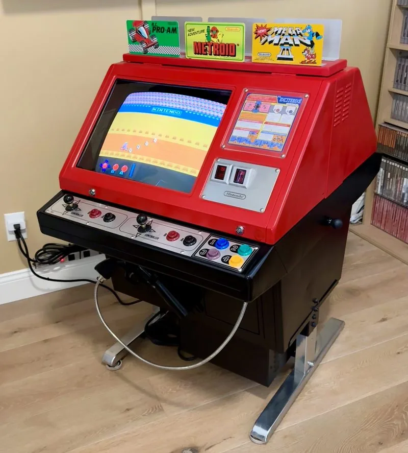
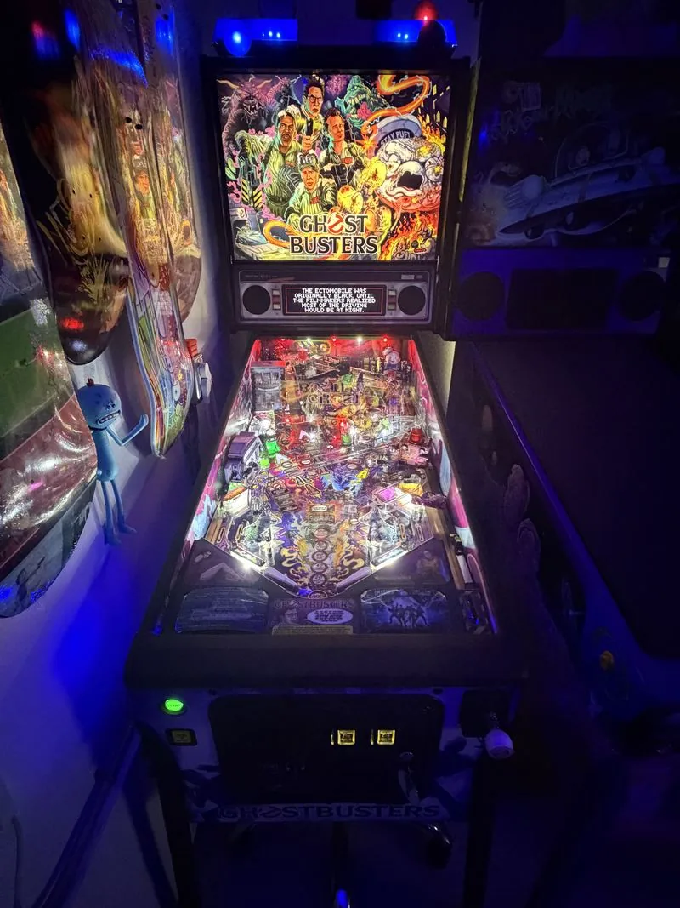
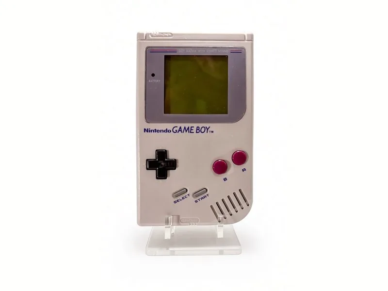
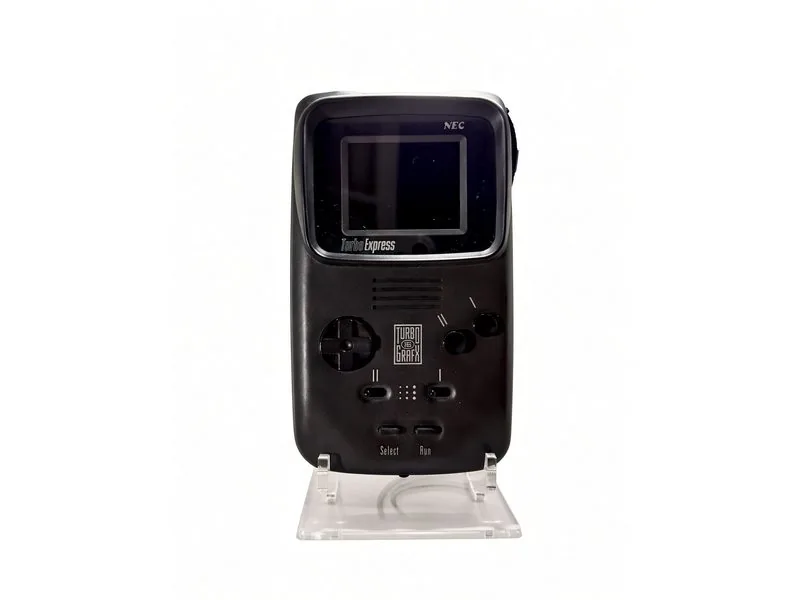
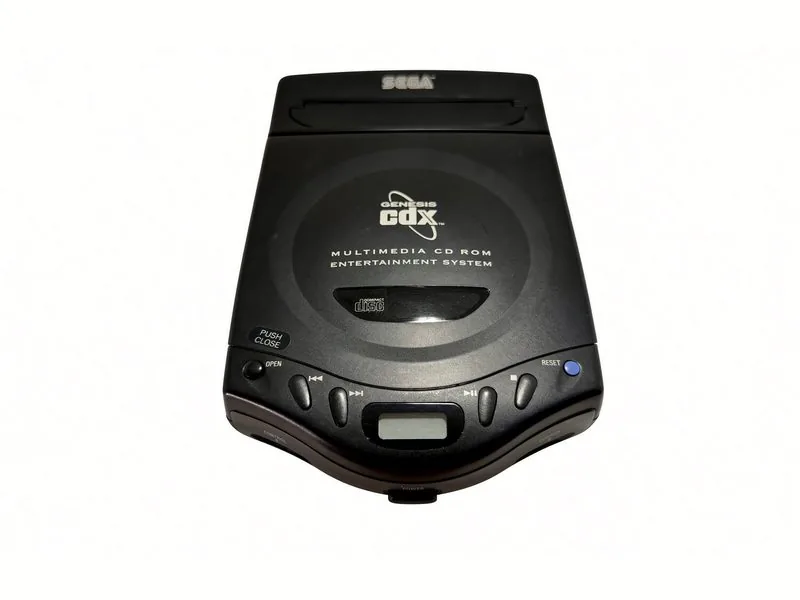
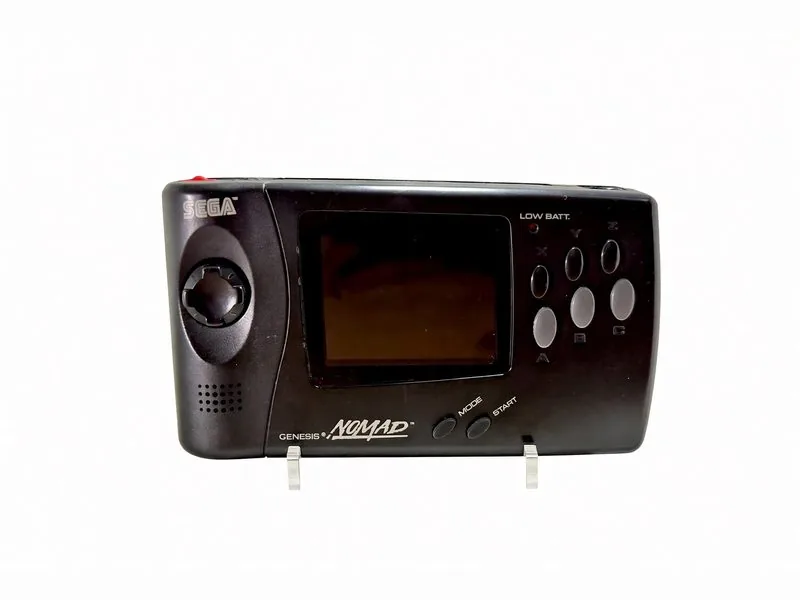
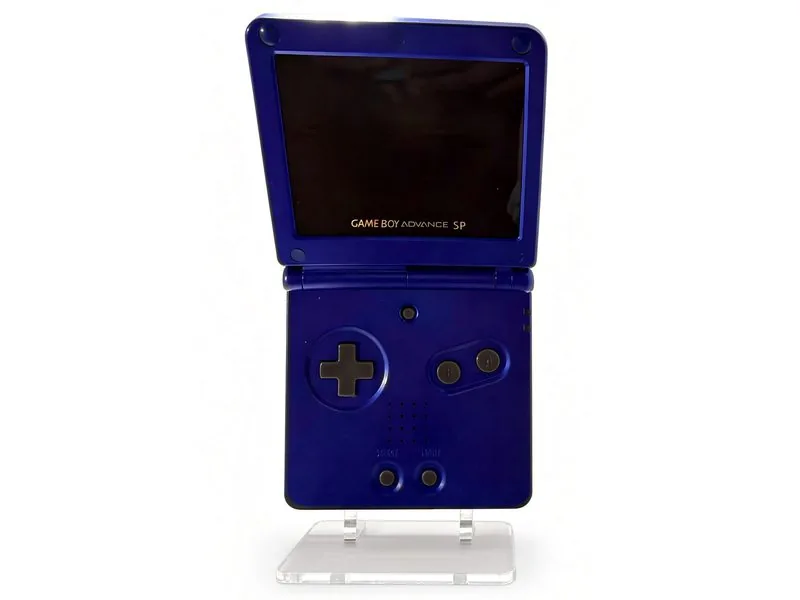
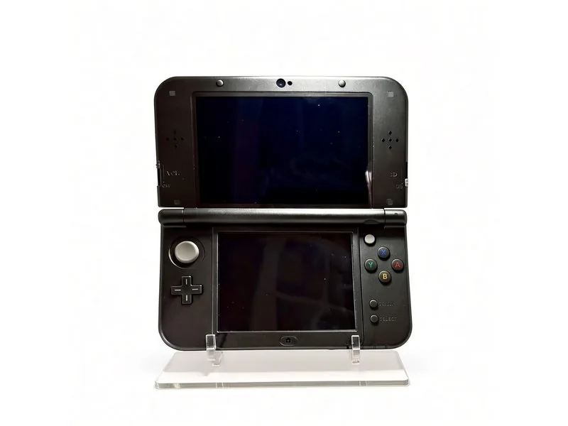
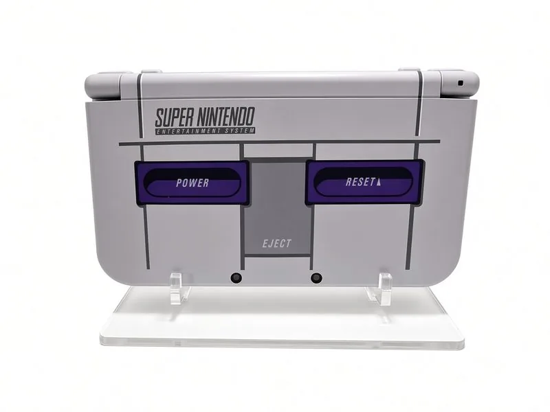

The Long View
Forty Years on One Line
Everything in the collection, placed at the year it was released — the cabinets and pins in one row, the consoles in another, the Sony monitors in a third. Scroll sideways; tap or hover anything to see what it is, and click through to its page.
Coin-op
 Donkey Kong 1981
Donkey Kong 1981 Mario Bros. 1983
Mario Bros. 1983
VS. Red Tent 1984 VS. UniSystem 1984
VS. UniSystem 1984 Mini Cute 1991
Mini Cute 1991 Big Blue 1992
Big Blue 1992 Indiana Jones 1993
Indiana Jones 1993
Ghostbusters 2016 Total Nuclear Annihilation 2017
Total Nuclear Annihilation 2017 Rick and Morty 2020
Rick and Morty 2020Consoles

Game Boy 1989
Turbo Express 1989 Super Nintendo 1990
Super Nintendo 1990 PC Engine Duo-R 1991
PC Engine Duo-R 1991 NES Top Loader 1993
NES Top Loader 1993
Genesis CDX 1994
Nomad 1995 Saturn 1995
Saturn 1995 Nintendo 64 1996
Nintendo 64 1996 Dreamcast 1999
Dreamcast 1999 GameCube 2001
GameCube 2001
Game Boy Advance SP 2003 PlayStation 2 2004
PlayStation 2 2004
New 3DS XL 2014
New 3DS XL — SNES Edition 2016


← drag or scroll sideways → · years are release years, not the year each one arrived here
The same thing as a list
Coin-op
- Donkey Kong — 1981
- Mario Bros. — 1983
- VS. Red Tent — 1984
- VS. UniSystem — 1984
- Mini Cute — 1991
- Big Blue — 1992
- Indiana Jones — 1993
- Ghostbusters — 2016
- Total Nuclear Annihilation — 2017
- Rick and Morty — 2020
Consoles
- Game Boy — 1989
- Turbo Express — 1989
- Super Nintendo — 1990
- PC Engine Duo-R — 1991
- NES Top Loader — 1993
- Genesis CDX — 1994
- Nomad — 1995
- Saturn — 1995
- Nintendo 64 — 1996
- Dreamcast — 1999
- GameCube — 2001
- Game Boy Advance SP — 2003
- PlayStation 2 — 2004
- New 3DS XL — 2014
- New 3DS XL — SNES Edition — 2016
Monitors
- PVM-2950Q — 1991
- BVM-20E1U — 1995
- PVM-20L5 — 2002
- BVM-A14F5U — 2003
- LMD wall — 2005